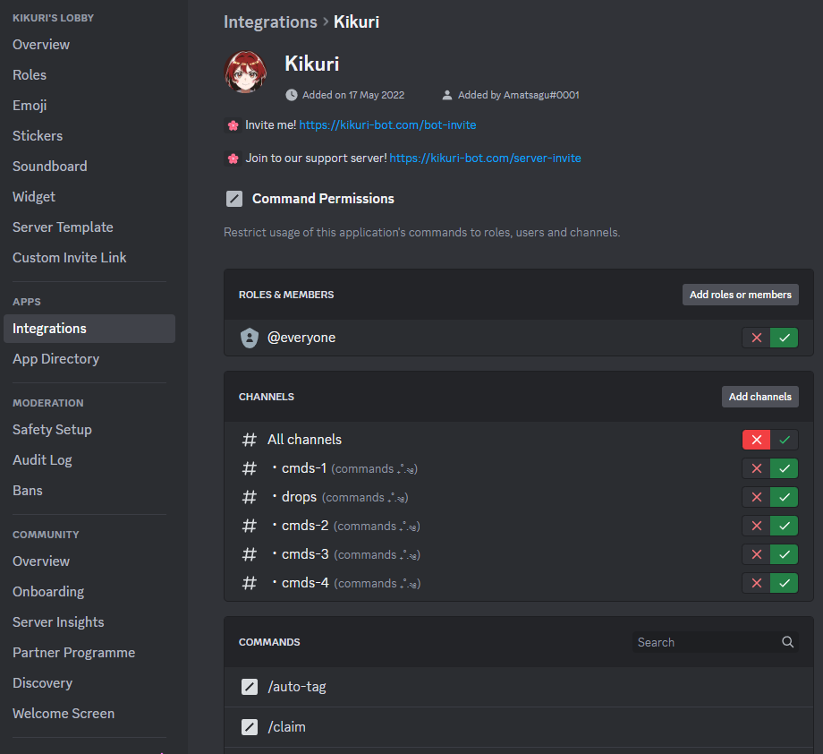

How to start?
We have a tutorial made by Sol#0777 that covers game basics. Please check the date in which the tutorial was last updated to ensure it covers the latest changes to Kikuri.
Invited bot, but emojis aren't showing?
Make sure @everyone has permission to use external emojis within the specific channel/server. The reason behind this is that webhooks essentially utilize default permissions when embedding content, therefore, if everyone doesn't have permission to use external emojis, neither do the bots' messages.
Invited bot, but slash commands aren't showing?
This may be related with the number of bots that contain slash commands within your server. Each guild can load only commands from first 50 discord bots. For more information regarding this topic, you can check this post!
How to lock/unlock commands?
We're using slash commands, a native system that is fully integrated with Discord platform. You can modify access to each command from server settings:
